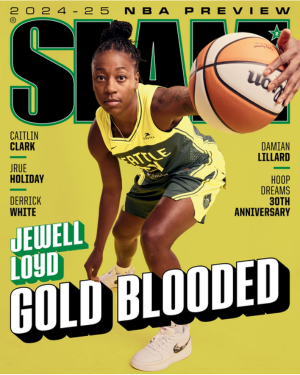
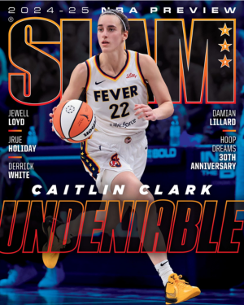
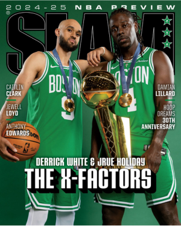
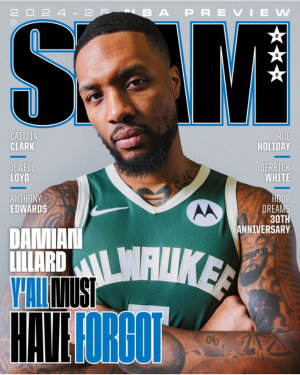

Jewell Loyd Discusses Her Journey to Becoming The GOLD MAMBA | SLAM 252 Cover Story
If Jewell Loyd retired tomorrow, she should be a first-ballot Hall of Famer. She’s put together a basketball résumé that is more impressive than most. And believe it or not, Loyd might have a solid 10-12 years to keep building on it; she’s only 30 years old and in her prime. Whether we look at her high school career, college career or her time in the W, she’s been a model of consistency…the model of consistency.

Simply Undeniable: Caitlin Clark Covers SLAM 252
Candace Parker. Tamika Catchings. A’ja Wilson. Breanna Stewart. Elena Delle Donne. Maya Moore.
These are just some of the WNBA players who have had impressive, eye-opening rookie seasons.
Add to that list Caitlin Clark, the No. 1 pick in the 2024 WNBA Draft.
Not since Parker—who went on to be the first and only player to win both Rookie of the Year and MVP in the same season—has a rookie impacted the League and everyone and everything around it as much as Clark.

Surreal Summer: Derrick White and Jrue Holiday Discuss Winning an NBA Championship, Olympic Gold Medals and Doing the Little Things
The 2023-24 NBA season started out a little competitive, internally speaking, for the Boston Celtics. Derrick White and Jrue Holiday made it known they were hosting a block contest. Inside a studio that lies just a few steps away from the parquet practice court in the Auerbach Center on an early September afternoon, the friendly competition from last season is the first topic of discussion.

Home Team: Damian Lillard Talks Offseason, Building Chemistry with the Bucks and How His Family Motivates Him
Everything he needs is here, including a state-of-the-art gym, where we’ve set up to shoot the cover of SLAM 252. Behind one basket, stretching the entire length of the wall, is a blown-up image of Lillard’s series-clinching three-pointer against the Rockets in 2014; behind the other, the unforgettable shot that knocked out the Thunder in 2019. Other photos marking significant moments in Lillard’s life and career surround the court—of family and friends, of award ceremonies and celebrations, of dunks and game-winners. “All part of the story,” he says.